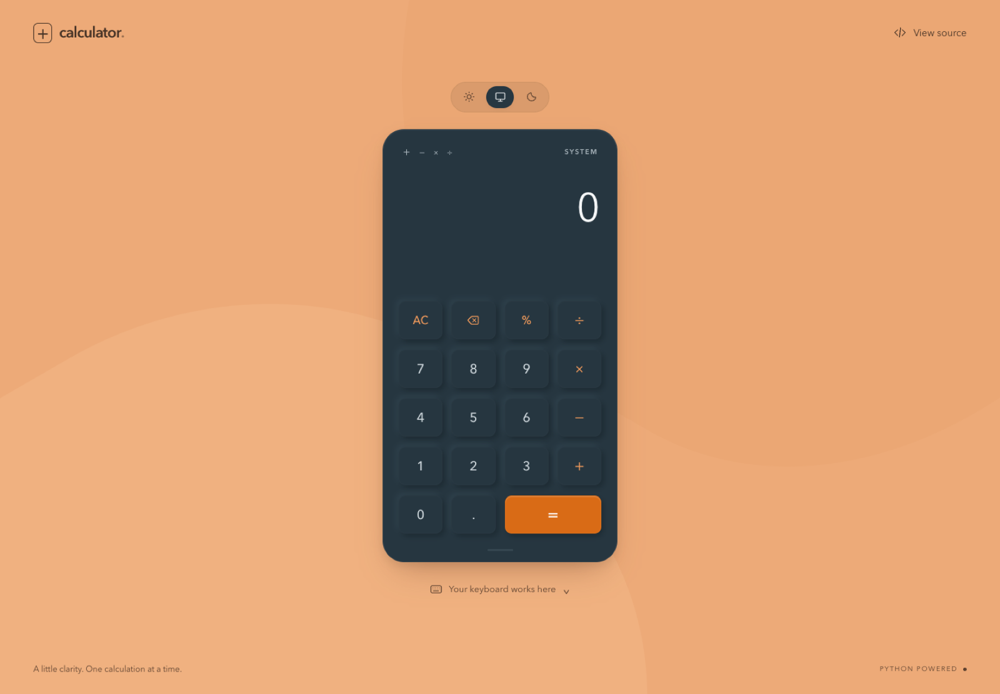

Work the way people expect
The keypad, physical keyboard, and pasted expressions all lead into the same calculation flow.
PROJECT 11 PYTHON WEB APPLICATION LIVE
A focused calculator that combines a tactile, responsive interface with a Python engine designed to evaluate everyday arithmetic safely and clearly.

I wanted the calculator to feel familiar right away, but I also wanted the code behind it to be dependable. The result is a small web application where the interface, API, parser, and automated tests each have a clear job.
The keypad, physical keyboard, and pasted expressions all lead into the same calculation flow.
Incomplete expressions, division by zero, and connection failures return understandable messages so the user can make a correction.
Light, dark, and system themes make the interface comfortable across devices, with the preference saved locally.
The layout gives the display and keypad most of the attention. Soft depth, an orange equals key, and restrained labels make the calculator feel tactile without making it busy.
The same controls scale down for tablet and mobile use.
The Python engine tokenizes numbers and supported symbols, applies operator precedence, and never passes user input to eval().
Python’s Decimal type avoids familiar binary floating-point surprises and formats answers to a practical 16 significant digits.
The browser sends an expression to the Flask API and receives either a display-ready result or a consistent error response.
Automated tests cover precedence, percentages, negative numbers, malformed requests, numeric limits, division by zero, and source-file protection.
Building a calculator showed me how many decisions sit behind a familiar tool. Input rules, parser safety, API behavior, visual feedback, accessibility, and deployment all have to work together.
Calculations are not stored. The live app sends each expression only to its same-origin Python endpoint and applies strict request and expression limits.
Open repository ↗